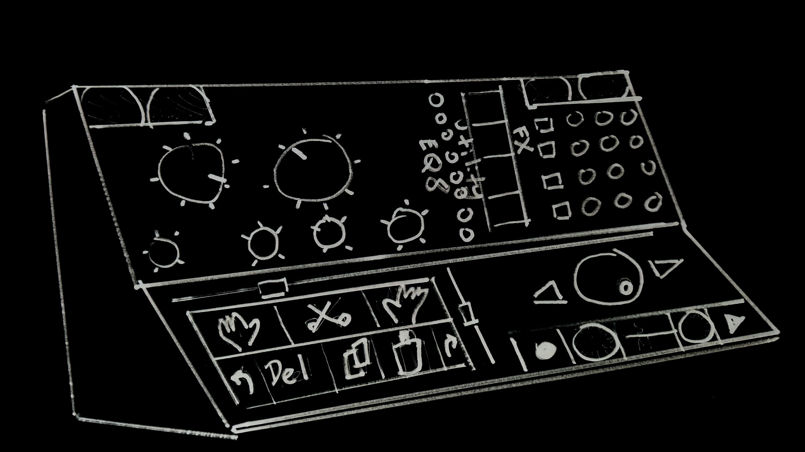

BLIND ENVY
sound is touch.
BLIND ENVY introduction
meet our team and learn about our mission.
Brief demo of BLIND ENVY One
a taste of what can be done with simple, non-visual design
Our first prototype, BLIND ENVY One, is all about accessibility. It consists of a widely available, low-cost midi-controller with REAPER, a digital audio workstation which can be downloaded and used at no expense. We are building our own hardware for future prototypes. We plan to continue designing and refining low-cost non-visual audio workflows, like the BLIND ENVY One, even as we design and construct innovative standalone hardware solutions.
Sampler of new works made entirely with BLIND ENVY One
take a listen to the amazing and wide-ranging sounds and songs our blind and sighted friends have already made using the BLIND ENVY One
Listen, touch, and tell your story.
BLIND ENVY takes the lost wisdom of tape-era audio work and gives it digital convenience: dedicated controls, motorized feedback, and fewer menus. We are building tactile recording and editing devices for those who need an alternative to screens. That includes people with screen fatigue, musicians who want a more physical instrument, and communities whose stories live more naturally in speech than in written interfaces.
Follow the build.
BLIND ENVY is in active development. We are prototyping hardware and preparing the audio magazine for production.